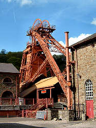
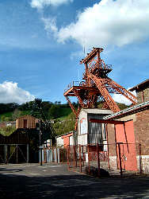

Lewis Merthyr Colliery
Rhondda Heritage Park
Useful Information
|  |
| Image: headrame. © by Tony Oldham (2006). With kind permission. |
| Location: |
Take exit No 32 on the M4 motorway.
Follow the A470 trunk road to Pontypridd, then the A4225 to Rhondda Valley.
Rhondda Heritage Park is at Trehafod located between Pontypridd and Porth.
 Location by UK Streetmap Location by UK Streetmap |
| Open: |
02-JAN to MAR Tue-Sun 10-18, last underground tour 16. APR to SEP daily 10-18, last underground tour 16. OCT to 24-DEC Tue-Sun 10-18, last underground tour 16. [2007] |
| Fee: |
Adults GBP 5.60, Children (4-16) GBP 4.30, Senior Citizen GBP 4.95, Family (2+2) GBP 16.50, Family (2+4) GBP 21. Groups: School children GBP 3.15, College Students GBP 4.05. Groups (10+): Adults GBP 5.04, Children (4-16) GBP 3.87, Senior Citizen GBP 4.46, pre booking required. [2007] |
| Classification: |
 Coal Mine
Coal measure in Carboniferous limestone. Coal Mine
Coal measure in Carboniferous limestone.
|
| Light: | electric. |
| Dimension: | |
| Guided tours: | D=75min. |
| Photography: | |
| Accessibility: | |
| Bibliography: |
Black Gold pit where the cash disappears,
Western Mail 14-AUG-1991.
Rhondda Heritage Park, 12 pp booklet, black cover, contains Black Gold, 8 pp booklet 11.7 x 5.5 inches black cover. Story of Lewis Merthyr Colliery. Carpenter, David J (2000): Rhondda Collieries, Images of Wales, 128 pp, illus. Cornwell, John (2001): Collieries of South Wales, pp 140 - 151. |
| Address: |
Lewis Merthyr Colliery, Coed Cae Road, Trehafod, nr Pontypridd, Mid-Glamorgan CF37 7NP, Tel: +44-1443-682-036, Fax: +44-1443-687-420.
E-mail: |
| As far as we know this information was accurate when it was published (see years in brackets), but may have changed since then. Please check rates and details directly with the companies in question if you need more recent info. |
|
History
| 1850 | the brothers David and John Thomas leased the mineral rights of Hafod Fach and Nyth Bran Farms. | |
| mid 1870's | the Coed Cae and Hafod Collieries passed into the hands of W T Lewis, who later became Lord Merthyr. | |
| 1877 | Tynewydd Colliery Disaster, five men were trapped underground for nine days. | |
| 1900 | Lewis had sunk the Bertie and the Trefor shafts which he named after his two sons. | |
| 1983 | Lewis Merthyr Colliery closed. | |
| 1987 | transformed into the Rhondda Heritage Park. | |
| JUN-1989 | visitor center opened to the public. | |
| MAY-1991 | exhibition Black Gold - the Story of Coal opened to the public. | |
| JUL-1994 | underground tour A Shift in Time opened to the public. |
Geology
Description
|  |
| Image: headframe. © by Tony Oldham (2006). With kind permission. |
The Visitors' Centre at the Rhondda Heritage Park provides the opportunity to explore the domestic and commercial aspects of Valley life in the fascinating artefact exhibitions and the indoor village street. The Visitors' Centre also houses the Rhondda Heritage Park Gallery, an excellent gift shop and quality restaurant. The visitor can experience the unique character and culture of the Rhondda Valleys through the audio-visual presentation "Black Gold - The Story of Coal". Journey back in time and see the Rhondda through the eyes of three generations of one local mining family. The exhibitions in the Trefor and Bertie Winding Houses and in the Fan House all portray part of the Black Gold story. In the Trefor Winding House, your narrator, Bryn Rees, guides you through the lively and evocative story of his own and his forefathers' lives. Transported back to 1958, you join Bryn in the middle of the working shift and reminiscences of life in the colliery prepare you for your own trip underground, on the tour 'A Shift in Time'. In the Bertie Winding House, Bryn introduces his grandfather, Thomas Rees, and they escort you further back in time to the 1850's. Dramatic events in the Rhondda's history are portrayed: the 1877 Tynewydd Colliery Disaster when five men were trapped underground for nine days; the notorious Tonypandy Riots, when troops were sent to the Valleys to keep public order; and A J Cook's fight for a minimum wage in the 1920's.
Take the trip of a lifetime on the "underground" tour called "A Shift in Time". Journey through time to experience for yourself the hardship and joys, the sights, sounds and smells, of Lewis Merthyr Colliery at work. Join your ex-miner guide in the Lamp Room and prepare yourself for a shift in the safest pit in South Wales! Please remember to wear practical shoes and clothing. From the Lamp Room you walk to the Trefor Pithead to commence your shift. Here just like a working miner, you ride down in a cage to pit bottom and emerge into the Lewis Merthyr Colliery of the past. Transported back in time, your senses take a moment to adjust and the realities of life underground begin to reveal themselves to you. You can explore the roadways and workings of the colliery and moving on through the air lock you are engulfed by smells and heat of the mine, with its changing atmospheric pressures, increasing darkness and humidity. Before reaching the coal face you are able to detonate your own explosion and, of course, hear and feel the effects resounding around you. At the coal face the noise and heat reach almost terrifying levels. In the distance you are able to see shadows of men hard at work, the toll of their labour laid out in front of you. Finally an exciting and unique ride completes your shift of a lifetime. You are catapulted through dark and twisting tunnels. A mysterious and unforgettable route back to the surface!
It is recommended that at least 3 hours is allowed for a visit. Purpose built paths for wheelchairs users provide easy access, even underground. For health and safety reasons only part of the tour is underground, the rest is simulated.
Text by Tony Oldham (2001). With kind permission.
 Rhondda Heritage Park,
official site
Rhondda Heritage Park,
official site